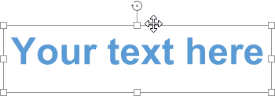
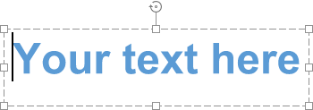
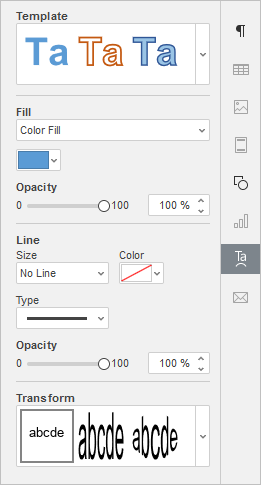
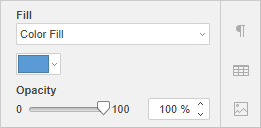
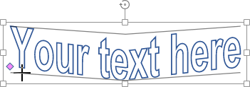

Umetanje tekstualnih objekata
U Document Editor-u možete učiniti tekst izražajnijim i skrenuti pažnju na određeni deo dokumenta tako što ćete umetnuti tekstualni okvir (pravougaoni okvir koji omogućava unos teksta unutar njega) ili objekat Tekst Art (tekstualni okvir sa unapred definisanim stilom fonta i bojom koji omogućava primenu određenih efekata na tekst).
Dodavanje tekstualnog objekta
Tekstualni objekat možete dodati bilo gde na stranici. Da biste to uradili:
- pređite na karticu Insert na gornjoj traci sa alatkama,
- izaberite odgovarajući tip tekstualnog objekta:
-
da biste dodali tekstualni okvir, kliknite na ikonu Text Box na gornjoj traci sa alatkama, zatim kliknite na mesto gde želite da dodate tekstualni okvir, držite taster miša i prevucite ivicu okvira da biste odredili njegovu veličinu. Kada otpustite taster miša, pojaviće se tačka za unos teksta unutar dodatog okvira, što vam omogućava da unesete tekst.
Napomena: tekstualni okvir možete umetnuti i klikom na ikonu Shape na gornjoj traci sa alatkama i izborom oblika iz grupe Basic Shapes.
- da biste dodali objekat Tekst Art, kliknite na ikonu Text Art na gornjoj traci sa alatkama, zatim kliknite na željeni šablon stila – objekat Tekst Art biće dodat na trenutnu poziciju kursora. Mišem označite podrazumevani tekst unutar okvira i zamenite ga sopstvenim tekstom.
-
da biste dodali tekstualni okvir, kliknite na ikonu Text Box na gornjoj traci sa alatkama, zatim kliknite na mesto gde želite da dodate tekstualni okvir, držite taster miša i prevucite ivicu okvira da biste odredili njegovu veličinu. Kada otpustite taster miša, pojaviće se tačka za unos teksta unutar dodatog okvira, što vam omogućava da unesete tekst.
- kliknite izvan tekstualnog objekta da biste primenili izmene i vratili se na dokument.
Tekst unutar tekstualnog objekta je njegov sastavni deo (kada pomerate ili rotirate tekstualni objekat, tekst se pomera ili rotira zajedno sa njim).
Pošto umetnuti tekstualni objekat predstavlja pravougaoni okvir sa tekstom (objekti Tekst Art podrazumevano imaju nevidljive ivice okvira), a taj okvir je ujedno i standardni autoshape, možete menjati i oblik i svojstva teksta.
Da biste obrisali dodati tekstualni objekat, kliknite na ivicu tekstualnog okvira i pritisnite taster Delete na tastaturi. Tekst unutar okvira takođe će biti obrisan.
Formatiranje tekstualnog okvira
Izaberite tekstualni okvir klikom na njegovu ivicu kako biste mogli da menjate njegova svojstva. Kada je tekstualni okvir izabran, njegove ivice se prikazuju kao pune (ne isprekidane) linije.

- za promenu veličine, pomeranje i rotaciju tekstualnog okvira, koristite posebne hvataljke na ivicama oblika;
- da biste uredili ispunu, liniju, stil prelamanja tekstualnog okvira ili zamenili pravougaoni okvir drugim oblikom, kliknite na ikonu Shape settings na desnoj bočnoj traci i koristite odgovarajuće opcije.
- da biste poravnali tekstualni okvir na stranici, rasporedili ga u odnosu na druge objekte, rotirali ili okrenuli tekstualni okvir, promenili stil prelamanja ili pristupili naprednim podešavanjima oblika, kliknite desnim tasterom miša na ivicu okvira i koristite opcije iz kontekstnog menija. Više informacija o poravnanju i raspoređivanju objekata možete pronaći na ovoj stranici.
- da biste sačuvali tekstualni okvir na čvrstom disku kao sliku, izaberite opciju Save as picture iz menija desnog klika.
Formatiranje teksta unutar tekstualnog okvira
Kliknite na tekst unutar tekstualnog okvira da biste promenili njegova svojstva. Kada je tekst izabran, ivice tekstualnog okvira prikazuju se kao isprekidane linije.

Napomena: formatiranje teksta je moguće promeniti i kada je izabran ceo tekstualni okvir (a ne sam tekst). U tom slučaju, sve promene primeniće se na sav tekst unutar okvira. Neke opcije formatiranja fonta (tip fonta, veličina, boja i stilovi ukrašavanja) mogu se zasebno primeniti na prethodno izabrani deo teksta.
Da biste rotirali tekst unutar tekstualnog okvira, kliknite desnim tasterom miša na tekst, izaberite opciju Text Direction, a zatim odaberite jednu od dostupnih opcija: Horizontal (podrazumevano izabrano), Rotate Text Down (vertikalni smer od vrha ka dnu) ili Rotate Text Up (vertikalni smer od dna ka vrhu).
Da biste vertikalno poravnali tekst unutar tekstualnog okvira, kliknite desnim tasterom miša na tekst, izaberite opciju Vertical Alignment, a zatim jednu od dostupnih opcija: Align Top, Align Center ili Align Bottom.
Ostale opcije formatiranja koje možete primeniti iste su kao i za običan tekst. Pogledajte odgovarajuće sekcije pomoći da biste saznali više o željenoj operaciji. Možete:
- horizontalno poravnati tekst unutar tekstualnog okvira
- podesiti tip fonta, veličinu i boju, kao i primeniti stilove ukrašavanja i unapred definisane stilove
- podesiti prored, promeniti uvlačenja pasusa, prilagoditi tabulatore za višelinijski tekst unutar tekstualnog okvira
- ubaciti hipervezu
Takođe možete kliknuti na ikonu Text Art settings na desnoj bočnoj traci i promeniti određene parametre stila.
Uređivanje stila Tekst Art objekta
Izaberite tekstualni objekat i kliknite na ikonu Text Art settings na desnoj bočnoj traci.

Promenite primenjeni stil teksta izborom novog Template šablona iz galerije. Takođe možete promeniti osnovni stil izborom drugog tipa fonta, veličine itd.
Promenite Fill ispune fonta. Možete izabrati sledeće opcije:
-
Color Fill – izaberite ovu opciju da biste definisali jednobojnu ispunu unutrašnjosti slova.

Kliknite na obojeno polje ispod i izaberite željenu boju iz dostupnih paleta boja ili definišite bilo koju boju po želji:
-
Gradient Fill – izaberite ovu opciju da biste ispunili slova sa dve boje koje se postepeno prelaze jedna u drugu.

- Stil – izaberite jednu od dostupnih opcija: Linear (boje se menjaju duž prave linije – horizontalno, vertikalno ili dijagonalno pod uglom od 45 stepeni) ili Radial (boje se menjaju kružno od centra ka ivicama).
- Smer – izaberite šablon iz menija. Ako je izabran Linear gradijent, dostupni su sledeći smerovi: od gore-levo ka dole-desno, od gore ka dole, od gore-desno ka dole-levo, s desna na levo, od dole-desno ka gore-levo, od dole ka gore, od dole-levo ka gore-desno, s leva na desno. Ako je izabran Radial gradijent, dostupna je samo jedna opcija.
- Gradijent – kliknite na levi klizač ispod gradijentne trake da biste aktivirali polje boje koje odgovara prvoj boji. Kliknite na polje boje sa desne strane da biste izabrali drugu boju iz palete. Prevucite klizač da biste podesili tačku prelaza gradijenta, odnosno mesto gde jedna boja prelazi u drugu.
Napomena: ako je izabrana neka od ove dve opcije, možete podesiti i nivo Opacity (neprozirnosti) prevlačenjem klizača ili ručnim unosom procentualne vrednosti. Podrazumevana vrednost je 100%, što odgovara potpunoj neprozirnosti. Vrednost 0% označava potpunu transparentnost.
- No Fill – izaberite ovu opciju ako ne želite da koristite ispunu.
Podesite Line liniju fonta: širinu, boju, tip i neprozirnost.
- Da biste promenili širinu linije, izaberite jednu od dostupnih opcija iz padajuće liste Size. Dostupne vrednosti su: 0.5 pt, 1 pt, 1.5 pt, 2.25 pt, 3 pt, 4.5 pt, 6 pt. Alternativno, možete izabrati opciju No Line ako ne želite da koristite liniju.
- Da biste promenili boju linije, kliknite na obojeno polje ispod i izaberite željenu boju.
- Da biste promenili tip linije, izaberite odgovarajuću opciju iz padajuće liste (podrazumevano je primenjena puna linija, ali je možete promeniti u neku od dostupnih isprekidanih linija).
- Da biste promenili neprozirnost linije, unesite željenu vrednost ručno ili koristite odgovarajući klizač.
Primeni tekstualni efekat izborom odgovarajuće vrste transformacije teksta iz galerije Transform. Stepen deformacije teksta možete prilagoditi prevlačenjem ružičaste hvataljke u obliku dijamanta.
